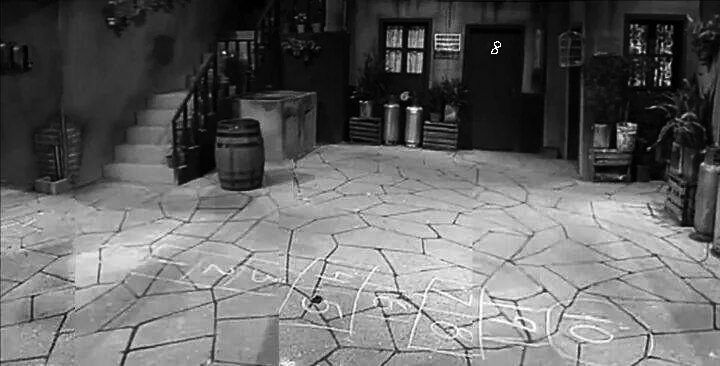
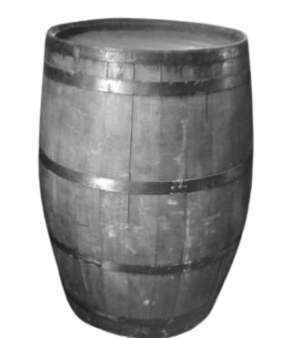

Vila nº 8, Cidade do México — Após oito anos de desaparecimento inexplicado, o menino conhecido como Chaves reapareceu ontem à noite no pátio da vila nº 8, exatamente como era quando sumiu — com a mesma roupa, o mesmo rosto infantil, e o mesmo olhar... só que agora vazio, fixo e sombrio.
“Ele não envelheceu um único dia...”
disse a moradora Dona Clotilde, visivelmente abalada.
“Mas aquele não é o mesmo garoto que conhecíamos.”
Na noite anterior, moradores ouviram batidas oc ocas e arranhões vindos do interior do barril, seguidas por um cheiro pútrido e uma risada infantil. Às 03h14 da madrugada, Chaves foi visto saindo de dentro do barril, sujo de terra e com o olhar completamente inexpressivo.
“Ele apenas se levantou, limpou o rosto com as costas da mão e perguntou se tínhamos um pão com presunto”
, relatou Seu Madruga, que diz ter sentido calafrios imediatos ao encarar os olhos do garoto.“Mas o que me deixou apavorado foi que ele não piscava. E quando sorriu... foi como se alguém estivesse puxando sua pele de dentro.”
O professor aposentado Girafales, que examinou Chaves brevemente, notou detalhes fisiológicos “perturbadores”:
* Pele fria e seca como papel de parede velho
* Pupilas dilatadas, mesmo sob luz forte
* Pulsação inexistente
* E, segundo ele, um odor de cemitério que “se agarra à roupa e não sai”
Desde o retorno de Chaves, fenômenos estranhos vêm sendo relatados:
* Os gatos de Dona Clotilde se recusam a entrar no pátio
* O espelho da Dona Florinda se quebrou espontaneamente ao refletir o garoto
* Quico foi encontrado em estado de choque, balbuciando: "Ele olhou pra mim... ele viu tudo..."
* E há relatos de vozes infantis sussurrando em locais vazios
A Delegacia Regional informou que está reabrindo o caso do desaparecimento e agora tratando-o como "evento incomum de potencial natureza paranatural". O barril foi isolado com fitas da perícia, mas foi novamente encontrado aberto e vazio esta manhã.
“Se isso é um milagre ou uma maldição, não sei dizer. Mas aquela coisa que voltou…
não é mais um menino.”Vila nº 8, Cidade do México — Desde o inexplicável reaparecimento do menino conhecido como Chaves, uma nova e aterradora realidade tomou conta da vila. Moradores relatam, há dias, sons perturbadores vindos do barril que sempre foi o refúgio da criança. Mas, ao contrário do passado, agora o barril parece respirar, pulsar e, segundo dizem, “viver”.
“São como unhas afiadas raspando a madeira, como se alguém ou algo quisesse sair de dentro,”
contou Dona Florinda, a voz tremendo. Ela afirma ouvir ruídos semelhantes todas as noites, especialmente entre 3h e 4h da madrugada, a chamada “hora das sombras”.
Seu Madruga, que tem passado as noites observando o barril, garante que viu o objeto se mexer sozinho.
“Ele se contrai, como um peito doente. Parece um ser vivo, pulsante. E às vezes, parece que está gemendo... um som abafado, quase como um choro.”
Além dos sons, moradores notaram um cheiro pútrido que surge do barril, uma mistura de terra molhada e carne apodrecida. O professor Girafales, embora relutante, analisou a área e descreveu o aroma como “um odor de morte e decadência impregnado no ar, que não se dissipa”.
Na madrugada da última quinta-feira, às 3h14, moradores relataram ouvir sussurros infantis vindos de dentro do barril, chamando nomes em uma língua incompreensível, mesclada a risadas distorcidas e choros abafados.
Quico, em estado de choque, disse ter visto “olhos amarelos brilhando dentro do barril, olhando para ele como quem caça uma presa”. Na manhã seguinte, o chão ao redor do barril apresentava arranhões profundos e marcas que lembram garras humanas — ou algo ainda mais sinistro.
Apesar do isolamento feito pela perícia, o barril foi encontrado aberto e vazio por duas vezes nesta semana.
“Não há sinal de quem abriu, nem vestígios de presença humana,”
relatou o agente encarregado da investigação.
A vila vive em clima de medo.
“À noite, ninguém passa perto do barril,”
disse Dona Neves, moradora que prefere não sair de casa após o anoitecer.
“Tem algo lá dentro. Algo que não quer ficar preso.”
O que está aprisionado no barril? Por que ele pulsa, respira e se move? Estaria o barril ligado ao estranho retorno do garoto Chaves, cuja presença já deixou a vila tomada por terror e fenômenos inexplicáveis?
A polícia segue investigando, mas muitos temem que este seja apenas o começo de um horror ainda maior.
